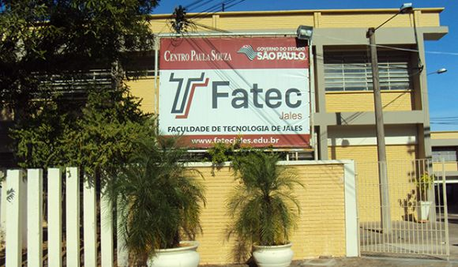

FATEC JALES

A Fatec Jales, criada pelo Decreto nº 52.122, de 3 de setembro de 2007, publicado no DOE de 4 de setembro de 2007, iniciou suas atividades em 10 de setembro de 2007, instalada em espaço concedido à Secretaria da Ciência, Tecnologia e Desenvolvimento Econômico pela Secretaria da Educação, de acordo com Decreto 51.068 de 24 de agosto de 2006.
O curso superior inicial oferecido foi de Tecnologia em Agronegócio, com 80 vagas semestrais, sendo 40 no período matutino e 40 no período noturno, com a duração de seis semestres. No primeiro semestre de 2010, foi implantado o curso de Tecnologia em Sistemas para Internet, com 70 vagas semestrais, sendo 35 no período vespertino e 35 no período noturno, também com duração de seis semestres. A partir do primeiro semestre de 2013, o curso de Sistemas para Internet passou a ser oferecido nos períodos matutino e noturno.
No segundo semestre de 2014, foi implantado o curso de Tecnologia em Gestão Empresarial, com 40 vagas semestrais no período noturno. A partir do primeiro semestre de 2015, esse passou a ser oferecido também na modalidade a distância, com 40 vagas semestrais.
VISÃO
Ser referência em Ensino Superior Público Tecnológico em sua área de atuação.
SOBRE O CENTRO PAULA SOUZA

O Centro Paula Souza é uma autarquia do Governo do Estado de São Paulo, vinculada à Secretaria de Desenvolvimento Econômico, Ciência, Tecnologia e Inovação (SDECTI). A instituição administra 220 Escolas Técnicas Estaduais (Etecs) e 66 Faculdades de Tecnologia (Fatecs), reunindo mais de 283 mil alunos em cursos técnicos de nível médio e superiores tecnológicos, em mais de 300 municípios (CPS, 2015).
Nas Fatecs, mais de 73 mil alunos estão matriculados em 71 cursos de graduação tecnológica, em diversas áreas, como Construção Civil, Mecânica, Informática, Tecnologia da Informação, Turismo, entre outras. Além da graduação, são oferecidos cursos de pós-graduação, atualização tecnológica e extensão (CPS, 2015).
A instituição foi criada pelo decreto-lei de 6 de outubro de 1969, como resultado de um grupo de trabalho para avaliar a viabilidade de implantação gradativa de uma rede de cursos superiores de tecnologia com duração de dois e três anos (CPS, 2015).
A trajetória do Centro Paula Souza vai além de seus 45 anos de fundação. Sua memória mistura-se com a história centenária do ensino profissional público em São Paulo. Em 1969, o órgão nasceu com a missão de organizar os primeiros cursos superiores de tecnologia, mas no decorrer das décadas, acabou englobando também a educação profissional do estado em nível médio, absorvendo unidades já existentes e construindo novas Etecs e Fatecs para expandir o ensino profissional a todas as regiões do Estado (CPS, 2015).
MISSÃO
Formar profissionais competentes, capazes de atuar em um mercado de trabalho em constante evolução, de maneira eficaz, com propostas inovadoras e princípios éticos.
INFRAESTRUTURA
A Fatec Jales, instalada na Rua Vicente Leporace, nº 2630, Jardim Trianon, possui amplas instalações distribuídas em uma área de aproximadamente 10.000 m².
Fonte:Fatec Jales
Sistemas para Internet
Informações do Curso
Carga Horária Total do Curso
2.880 aulas à 2.400 horas (atende CNCST) + 240 horas de Estágio Supervisionado + 160 horas do Trabalho de Graduação = 2.800 horas
Duração da Hora/Aula
50 minutos
Período Letivo
Semestral, mínimo de 100 dias letivos (20 semanas)
Prazo de Integralização
Mínimo: 3 anos ( 6 semestres)
Máximo: 5 anos (10 semestres)
Vagas Semestrais
35 para o turno Matutino
35 para o turno Noturno
Turno de Funcionamento
Matutino
Noturno
Regime de Matrícula
Semestral
Regime do Curso
Matrícula por conjunto de disciplinas;
Forma de Acesso
Classificação em Processo Seletivo – Vestibular
É realizado em uma única fase, com provas das disciplinas do núcleo comum do ensino médio ou equivalente, em forma de testes objetivos e uma redação.
Finalidades e Objetivos do Curso
O Curso Superior de Tecnologia em Sistemas para Internet tem como finalidade oferecer aos seus estudantes formação de nível superior, gratuita e de qualidade, proporcionando aos tecnólogos conhecimentos e formação integral, com base nas tendências da competitividade contemporânea e internacional, tornando-os capazes de intervir no desenvolvimento econômico e social da região na qual o curso se insere observadas as práticas da Ética e cidadania.
Perfil Profissional
O Tecnólogo em Sistemas para Internet ocupa-se do desenvolvimento de programas, de interfaces e aplicativos, do comércio e do marketing eletrônicos, além de sítios e portais para Internet e intranet. Esse profissional gerencia projetos de sistemas, inclusive com acesso a banco de dados, desenvolve projetos de aplicações para a rede mundial de computadores e integra mídias nos sítios da Internet. Atua com tecnologias emergentes como computação móvel, redes sem fio e sistemas distribuídos. Cuidar da implantação, atualização, manutenção e segurança dos sistemas que utilizam a Internet como plataforma também são suas atribuições. (INEP BRASIL, 2010).
Áreas de Atuação (Funções)
No mercado de trabalho atual, as denominações para este profissional têm sido: Analista de Sistemas, Web Designer, Gerente de Desenvolvimento de Software, Analista de Processo de Software, Programador de Sistemas Computacionais, Consultor em
Tecnologia da Informação, Web Developer, Analista de SEO (Search Engine Optmization) e Gestor de Conteúdo.
Dentre outras da área de Tecnologia da Informação.
Tecnologia da informação
Introdução
No início, os computadores eram tidos apenas como "máquinas gigantes" que tornavam possível a automatização de determinadas tarefas em instituições de ensino/pesquisa, grandes empresas e nos meios governamentais. Com o avanço tecnológico, tais máquinas começaram a perder espaço para equipamentos cada vez menores, mais poderosos e mais confiáveis. Como se não bastasse, a evolução das telecomunicações permitiu que, aos poucos, os computadores passassem a se comunicar, mesmo estando em lugares muito distantes geograficamente.
Mas perceba que, desde as máquinas mais remotas e modestas até os computadores mais recentes e avançados, o trabalho com a informação sempre foi o centro de tudo. É por isso que a expressão Tecnologia da Informação (TI) é tão popular. Mas o que vem a ser isso?
Antes de tudo, a informação
A informação é um patrimônio, é algo que possui valor. Quando digital, não se trata apenas de um monte de bytes aglomerados, mas sim de um conjunto de dados classificados e organizados de forma que uma pessoa, uma instituição de ensino, uma empresa ou qualquer outra entidade possa utilizar em prol de algum objetivo.
Neste sentido, a informação é tão importante que pode inclusive determinar a sobrevivência ou a descontinuidade das atividades de um negócio, por exemplo. E não é difícil entender o porquê. Basta pensar no que aconteceria se uma instituição financeira perdesse todas as informações de seus clientes ou imaginar uma pessoa ficando rica da noite para o dia por ter conseguido descobrir uma informação valiosa analisando um grande volume de dados.
Diante de tamanha relevância, grandes entidades investem pesado nos recursos necessários para obter e manter as suas informações. É por isso que é extremamente raro ver empresas como bancos, redes de lojas e companhias aéreas perdendo dados essenciais ao negócio. Por outro lado, é bastante frequente o uso inadequado de informações ou, ainda, a subutilização destas. É nesse ponto que a Tecnologia da Informação pode ajudar.
Tecnologia da Informação
A Tecnologia da Informação (TI) pode ser definida como o conjunto de todas as atividades e soluções providas por recursos computacionais que visam permitir a obtenção, o armazenamento, o acesso, o gerenciamento e o uso das informações. Na verdade, as aplicações para TI são tantas - estão ligadas às mais diversas áreas - que há várias definições para a expressão e nenhuma delas consegue determiná-la por completo.
Sendo a informação um patrimônio, um bem que agrega valor e dá sentido às atividades que a utilizam, é necessário fazer uso de recursos de TI de maneira apropriada, ou seja, é preciso utilizar ferramentas, sistemas ou outros meios que façam das informações um diferencial. Além disso, é importante buscar soluções que tragam resultados realmente relevantes, isto é, que permitam transformar as informações em algo com valor maior, sem deixar de considerar o aspecto do menor custo possível.
A questão é que não existe "fórmula mágica" para determinar como utilizar da melhor maneira as informações. Tudo depende da cultura, do mercado, do segmento e de outros fatores relacionados ao negócio ou à atividade. As escolhas precisam ser bem feitas, do contrário, gastos desnecessários ou, ainda, perda de desempenho e competitividade podem ser a consequência.
Tome como base o seguinte exemplo: se uma empresa renova seu parque de computadores comprando máquinas com processadores velozes, muita memória e placa de vídeo 3D para funcionários que apenas precisam utilizar a internet, trabalhar com pacotes de escritório ou acessar a rede interna, está fazendo gastos desnecessários. Comprar máquinas de boa qualidade não significa adquirir as mais caras e sotisticadas, mas aquelas que possuem os recursos necessários.
Por outro lado, imagine que uma companhia comprou computadores com GPUs de desempenho modesto e monitor de 17 polegadas para profissionais que trabalham com AutoCAD. Para estes funcionários, o ideal seria fornecer computadores que suportam aplicações exigentes e um monitor de, pelo menos, 20 polegadas. Máquinas mais baratas certamente conseguem rodar o programa AutoCAD, porém com lentidão. Além disso, o monitor com área de visão menor dá mais trabalho aos profissionais. Neste caso, percebe-se que a aquisição destes equipamentos reflete diretamente na produtividade. Por este motivo, qualquer decisão relacionada à TI precisa levar em conta as necessidades de cada setor, de cada departamento, de cada atividade, de cada indivíduo.
Veja este outro exemplo: uma empresa com 50 funcionários, cada um com um PC, adquiriu um servidor para compartilhamento e armazenamento de arquivos em rede que suporta 500 usuários conectados ao mesmo tempo. Se a companhia não tiver expectativa de aumentar seu quadro de funcionários, comprar um servidor deste porte é o mesmo que adquirir um ônibus para uma família de 5 pessoas. Mas o problema não é apenas este: se o referido servidor, por alguma razão, parar de funcionar, os arquivos ficarão indisponíveis e certamente atrapalharão as atividades da empresa.
Neste caso, não seria melhor adquirir um servidor mais adequado às necessidades da companhia e investir em recursos de disponibilidade para diminuir as chances de a rede deixar de funcionar? Ou, talvez, estudar a possibilidade de contratar uma solução baseada em computação nas nuvens específica para este fim?
Com estes exemplos, é possível ter uma pequena ideia do qual amplo é o universo da Tecnologia da Informação. Independente da aplicação, há ainda vários outros aspectos que devem ser considerados, por exemplo: segurança, disponibilidade, comunicação, uso de sistemas adequados (eles realmente devem fazer o que foi proposto), tecnologias (qual é a melhor para determinada finalidade), legislação local e assim por diante.
O profissional de TI
As tarefas de desenvolver, implementar e atualizar soluções computacionais cabem aos profissionais de TI. Por causa de sua amplitude, a área é dividida em várias especializações, tal como acontece com a medicina, por exemplo. Sendo assim, pode-se encontrar profissionais de TI para cada um dos seguintes segmentos: banco de dados, desenvolvimento, infraestrutura, redes, segurança, gestão de recursos, entre outros.

Para cada uma destas áreas, há subdivisões. Por exemplo, em desenvolvimento, há profissionais que atuam apenas com softwares comerciais (como ERP), outros que trabalham apenas com a criação de ferramentas para dispositivos móveis, outros que concentram suas atividades na internet e assim por diante.
Via de regra, interessados em seguir carreira na área de TI fazem cursos como ciência da computação, engenharia da computação e sistemas de informação, mas há outros, inclusive com foco mais técnico, como tecnologia em redes de computadores e tecnologia em banco de dados, além de cerificações e cursos de pós-graduação para profissionais já formados.
Finalizando
Quem precisa de TI? Nos tempos atuais, a sociedade como um todo. Hoje, a informatização atinge as mais diversas áreas do conhecimento e está cada vez mais presente no cotidiano das pessoas, mesmo quando elas não percebem.
Se você declara imposto de renda, seus dados são processados por computadores do governo; se você tira passaporte, suas informações ficam cadastradas em um banco de dados da Polícia Federal (ou de outro órgão competente, de acordo com o país); se você faz compras no mercado, passa pelo caixa, que dá baixa dos produtos no sistema da empresa; para você usar o telefone, uma complexa rede de comunicação controlada por computadores é utilizada. Enfim, exemplos não faltam.
A Tecnologia da Informação, portanto, não é apenas sinônimo de modernidade. É, acima de tudo, uma necessidade dos novos tempos, afinal, a informação sempre existiu, mas não de maneira tão volumosa e aproveitável.